Delo z obsegi podatkov vam omogoča, da enostavno izberete obseg podatkov, enostavno delo pri sortiranju ali filtriranju podatkov z uporabo glav stolpcev/vrstic in se tako izognete nevarnosti ročne manipulacije s podatki! Kot boste videli, je to zelo enostavno:
vnesite podatke in jih uredite, kot to običajno počnete,
označite celice, za katere želite, da postanejo vaš obseg podatkov; ne pozabite vključiti glave stolpca,
kliknite na Podatki – Določi obseg...
Pokazati bi se moralo naslednje pogovorno okno:
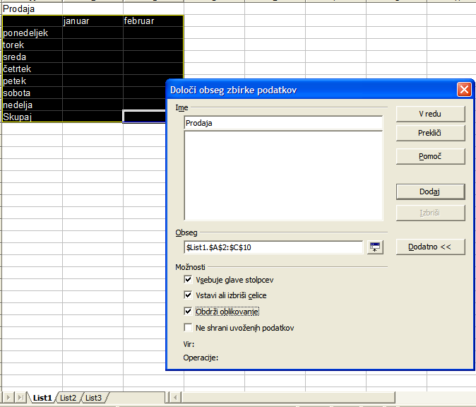
Obseg
je enak tistemu, ki ste ga označili v ozadju.
Poimenujte obseg podatkov, ki je določen v polju Obseg.
Če obseg ni enak tistemu, kar želite, kliknite na ikono 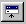 skrči in določite (označite) obseg podatkov, ki ga želite.
Desno od polja Obseg boste videli gumb z imenom Dodatno, 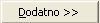
- kjer dvojna puščica kaže v desno, ko možnosti niso vidne in v levo, ko so možnosti vidne (kot na sliki zgoraj).
- ne pozabite označiti 'Vsebuje glave stolpcev', da bodo vaše glave stolpcev prepoznane pri sortiranju podatkov,
- označeno potrditveno polje 'Vstavi ali izbriši celice' vam omogoča, da pri delu z dokumentom vstavljate nove podatke ali jih brišete in ti popravki bodo upoštevani v obsegu podatkov
- označeno potrditveno polje 'Obdrži oblikovanje', pove OpenOffice.org, da obdrži oblikovanje vseh novih podatkov, ki bi jih naknadno vnesli,
- označeno potrditveno polje 'Ne shrani uvoženih podatkov' se nanaša na podatke ki jih kličemo z baze podatkov in ti podatki ne bodo shranjeni skupaj z vašo datoteko
Kliknite na V redu, da bi zaprli pogovorno okno in se vrnili v vaš dokument.
Določite lahko toliko obsegov podatkov, kot jih želite; edino kar morate storiti je to, da ponovite korake, ki so opisani zgoraj in kliknete gumb 'Dodaj' v pogovornem oknu. Enako velja, če želite zbrisati obseg podatkov, izberite obseg podatkov, ki ga želite in kliknite na pripadajoči gumb v pogovornem oknu.
Potem, ko ste vnesli vaše obsege podatkov, izberite tistega s katerim želite delati, na naslednji način:
- v meniju Podatki izberite 'Izberi obseg'
- v oknu, ki se pokaže, izberite obseg, ki ga želite in kliknite na V redu
- obseg se bo v vašem dokumentu pokazal osvetljen (označen)
Tukaj je obseg podatkov, s katerim bomo delali:
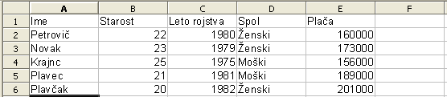
Razvrščanje podatkov je zelo enostavno: označite obseg podatkov, s katerim želite delati in potem:
v meniju Podatki - Razvrsti
bi se moralo pokazati naslednje pogovorno okno :
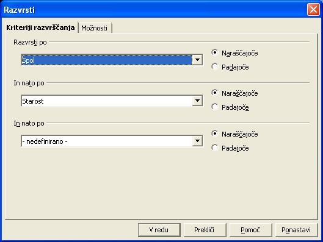
V jezičku Kriteriji razvrščanja lahko določite do 3 kriterije. Odločili smo se, da bomo podatke razvrstili naraščajoče, najprej po spolu in nato po starosti.
Poglejmo pobliže predlagane možnosti pod jezičkom Možnosti :
Vse te možnosti vam bodo omogočile urejanje vaših razvrščenih podatkov v isti tabeli ali v podobni tabeli, območje katere ste predhodno določili (v našem primeru smo se odločili za kopiranje rezultatov tik pod prvo tabelo).
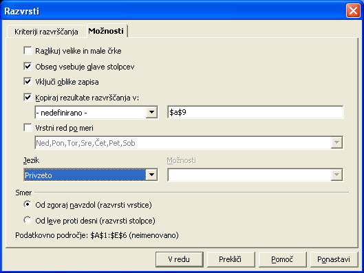
Tukaj je rezultat:
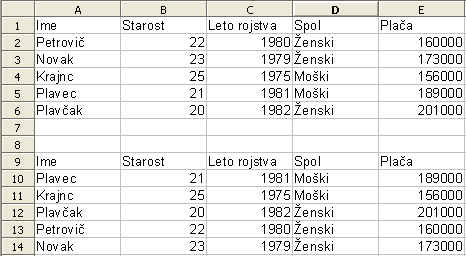
Enostavno, mar ne ?!
4.1 Standardni Filter
Uporaba filtrov je prav tako enostavna, kot razvrščanje.
Potem, ko ste označili svoj obseg podatkov:
- pojdite na meni Podatki – Filter – Standardni Filter...
Pojaviti bi se moralo naslednje okno:
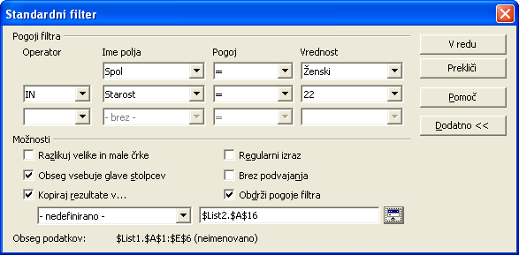
- zapolnite ime polja s podatkom, na katerem bo baziral vaš filter, tako, da ga izberete v padajočem meniju,
- tudi tukaj lahko uporabite 3 kriterije z uporabo Boolovih operatorjev(in, ali) in ostalih pogojev kot so je enako, večje kot, manjše kot, manjše ali enako kot.... Vrednosti ustrezajo podatkom, na katere bo deloval filter glede na izbrano polje,
- gumb Dodatno vam omogoča razlikovanje velikih in malih črk, izločanje podvojenih vrednosti itd.,
- v našem primeru smo se odločili za kopiranje rezultata na isti list, samo malce nižje (z uporabo ikone za izbiranje ).
Tukaj je rezultat:
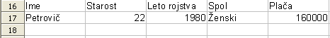
4.2 Samodejni filter
Samodejni filter se malo razlikuje od standardnega filtra. Da bi videli, kaj počne, ga bomo uporabili. Označite obseg podatkov vključno z imeni stolpcev:
- pod Podatki, izberite Filter – Samodejni filter, in na ekranu dobimo naslednje:
Zraven vsakega imena stolpca se pojavi majhna puščica. Kliknite na puščico zraven polja 'Ime':
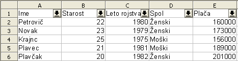
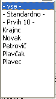Kot boste opazili, predstavlja seznam imen možnosti, ki jih lahko izberete za kriterij filtra in to lahko naredite za vsak stolpec posebej.
Če kliknete na Standardno, se bo pojavilo pogovorno okno, ki je opisano v prejšnjem odstavku.
Kliknite na Krajnc in poglejte rezultat:
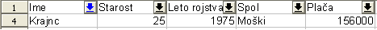
Dobili smo samo podatke, ki ustrezajo imenu Krajnc.
Da bi preklicali samodejni filter, označite obseg in izberite Podatki – Filter – Samodejni filter, in odznačite Samodejni filter
4.3 Napredni filter
Napredni filter je filter, ki nam omogoča uporabiti več, kot 3 kriterije filtriranja, največ 8.
Da bi lahko uporabili ta filter, moramo ustvariti polje, v katerega bomo vpisali kriterije. Poglejmo si primer, življenje je tako bolj enostavno.
Začnimo s primerom, ki ga že imamo:
1. prekopirajte vrstico z imeni stolpcev (Ime, Starost) v prazne celice na vašem listu, na primer v vrstico 10,
Zdaj vpišite vaš kriterij za filtriranje pod vsak stolpec. Paziti morate naslednje: kriteriji v isti vrstici so med sabo povezani z logičnim 'IN', kriteriji v različnih vrsticah pa so med sabo povezani z logičnim 'ALI'. Ko vpisujete imena z znakom za enakost (enačaj), ne pozabite na narekovaje ('').
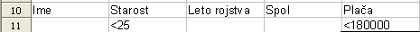
Torej,
v tem primeru iščemo ljudi, ki so stari manj, kot 25 let IN (ker
sta kriterija v isti vrstici) tiste, ki imajo plačo, manjšo od
180000.Tukaj je rezultat po uporabi našega filtra (kako, bomo takoj
videli)
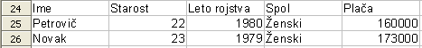
To je točno to, kar smo iskali!
Torej, po kreiranju polj s kriteriji
3. izberite obseg podatkov, na katere bo deloval filter
4. izberite Podatki – Filter – Napredni filter,
5. v oknu, ki se pojavi, z uporabo gumba za izbiranje izberite polja, ki ste jih definirali v vrsticah 10 in 11,
6. v možnostih (Dodatno>>) določite, kje se naj podatki pojavijo (mi smo jih postavili v vrstico 24) in kliknite V redu. Voilà!
Avtor: Sophie Gautier
Zahvala: Guyu Capri za njegovo podporo in stalno vzpodbudo.
Intgr par : N/A
Zadnje spremembe: 20 July 2002
Contacts: OpenOffice.org Documentation http://documentation.openoffice.org
Slovenski OpenOffice.org: http://openoffice.lugos.si
Prevod : Alex Thurgood; screenshots: Daniel Strome
Slovenski prevod: Anton Tomanič, 25. november 2002
Ta dokument je izdan pod pogoji GNU Free Documentation License.
© 2002 Sophie Gautier © 2002 Alex Thurgood © 2002 Daniel Strome